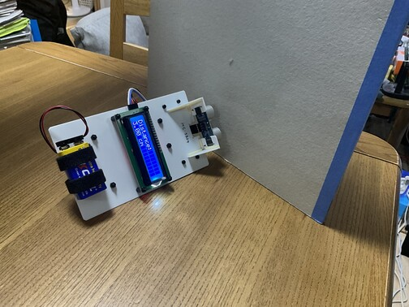
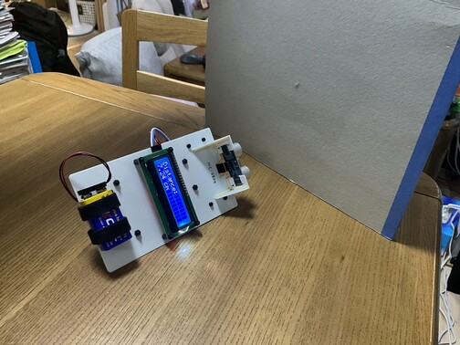
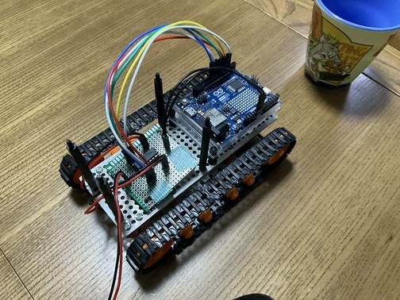
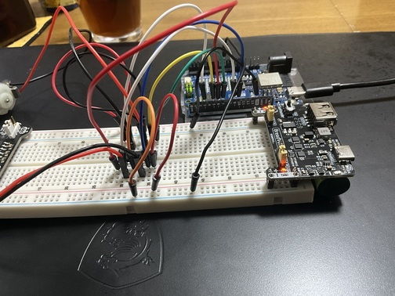
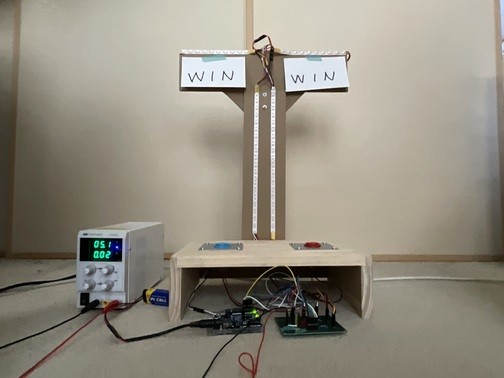

制作物
これらは私が組み立てた回路とコードです
①スイッチを押すとLEDが順番に光る回路
 (1).jpg)

この回路はスイッチを押すとLEDが順々に光っていく仕組みになっています。
苦労した点は配線があまりうまくいかなかったことです
詳しい仕組みとしては、左側のボタンを押すとLEDが1つ点灯し、右側のボタンを押すとLEDが1つ消灯します
真ん中のボタンを押すと、全てのLEDが消灯します
- 参考としてArduinoのサンプル回路を使用しました
- プログラムを組む際は、AIなどの力も借りました
②LED応用回路その1
 (1).jpg)

この回路はスイッチを押すとLEDが順々に光っていくのは、①の回路と同様なのですが
右側のスイッチは、右側のLEDしか点灯させません、左側も同様です
また、真ん中のスイッチを押すと全てのLEDが消灯します
- この回路は①の回路を改造して作りました
- プログラムにも改良を加えており、苦労しました
③スイッチを押すとドレミの音が出る回路
.jpg)

この回路はスイッチを押すとそれに対応したドレミの音が出ます
回路を組むこと自体は苦労しませんでしたが、プログラムを書くのに苦労しました
- arduinoにダウンロードされたライブラリを駆使しました
- スイッチの数が多かったので調達が難しかったです
④２つのモーターを制御する回路
.jpg)

この回路は２つのモーターをそれぞれのスイッチで制御する回路です
モーターの電源は別で用意し、中央にあるモータードライバICを使用して制御しています
上段と下段のスイッチの役割は同じで、担当するモーターが違います
上のスイッチを押すとモーターのが回転し、下のスイッチを押すとモーターの正転と逆転を切り替えられます
- モータードライバICを調達するのに苦労しました
- Arduinoにプログラムを書き込む際、モーター同士が混ざらないようにするのに苦労しました
⑤距離測定回路
.jpg)
.jpg)


この回路は１つの地点からの距離を測定する回路です
持ち運んで使えるように、プラ板でフレームを作り、部品と電源を設置しました
ブレッドボードの代わりにユニバーサル基板を使って配線しました
⑥サイコロ回路
.jpg)

この回路は7セグメントを利用したサイコロの回路です
ボタンを押すと数字をランダムに選択し、１秒後にその数字を表示します
- 7セグメントに配線するのに苦労しました
⑦ラジコン改造
私は、夏休み中の目標を「市販のラジコンをArduinoを利用して動かすこと」にしました
まず、私はTAMIYAのリモコンロボット 製作セットITEM70170というリモコンを購入し、組み立てました。
その後に、上部のアームを撤去し、arduinoと回路を取り付けるようにしました
下の画像は、上部に取り付ける回路の試作品です。ブレッドボードを使用して動作を確認しました


より詳しい事は下のボタンから移動できます
LED早押し対決機

この回路は、①と②を応用、合体させたものです
原理は②の回路をそのまま流用しているので、それぞれのスイッチを押せばLEDが光ります
しかし機能を追加しており、片方のLEDが全て点灯した場合は、もう片方のLEDの点灯を無効化するというものです
- どちらかのLEDを全て灯せば、対応したLEDが光る仕組みも入れています
- 苦労した点は、土台を作ることに時間を掛けてしまったことです